S1 · Aceite das regras
Ao entrar no Discord ou jogar, você concorda em seguir todas as regras. Não conhecer uma regra não elimina strike.
Todas as regras resumidas em um só lugar, com banners por categoria, busca rápida e limites de grupo. Consulte a equipe do servidor para esclarecimentos e atualizações oficiais.
Leia as regras gerais e os limites da sua espécie. Em caso de dúvida, pergunte à equipe antes de agir. Não conhecer uma regra não elimina uma punição.
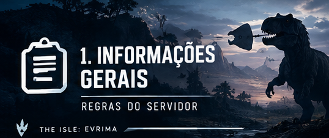
S1–S5
Ao entrar no Discord ou jogar, você concorda em seguir todas as regras. Não conhecer uma regra não elimina strike.
As regras podem mudar; acompanhe os anúncios. Continuar jogando significa aceitar a versão atual.
As regras valem em todas as áreas e a qualquer momento. A Hot Zone não existe mais.
Se algo não estiver descrito, não presuma que é permitido. Pergunte ou abra ticket antes de agir.
Grave replay F2 e/ou tire prints com nomes e IDs visíveis. No ticket, diga o que, quando e quem.
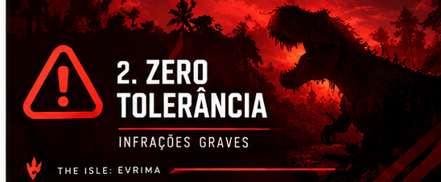
Z1–Z6
Não use cheats, macros nem abuse de bugs ou mecânicas não intencionais.
Não explore brechas para contornar regras. Se estiver em dúvida, pergunte.
Racismo, sexismo, homofobia e discriminação não são tolerados no jogo, Discord ou voz.
Assédio extremo contra jogadores ou equipe é proibido.
Não use outra conta para contornar banimento ou punição.
Punições de zero tolerância são permanentes e não podem ser apeladas.
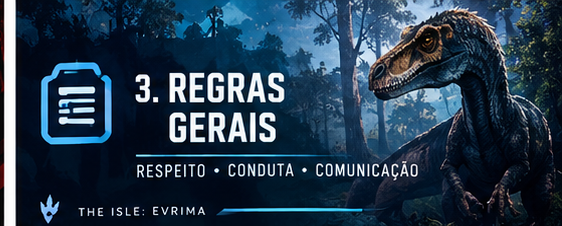
G1–G13
Chats públicos do Discord e chat global: inglês. Chat local em outro idioma só se todos entenderem; vale também nos servidores “no rules”.
Sem assédio, bullying, baiting ou toxicidade excessiva. Problemas devem ir para ticket.
Canais de voz são para jogar, não para drama ou conflitos.
Não entre em grupo com alguém planejando matá-lo depois.
Pode entrar em luta entre espécies diferentes atacando por conta própria. Não entre em luta que envolva sua espécie em qualquer lado. Exceção: defender alguém que já estava no seu grupo antes da luta. Ajudar aleatoriamente alguém da sua espécie não pode; cooperar com um lado segue regras de agrupamento.
Pode compartilhar sua própria localização; não divulgue a de outra pessoa sem consentimento.
Não nasça em ninho para matar jogadores ou destruí-lo.
Não use penhascos, água profunda ou outros meios para morrer e negar o corpo. Espécies aquáticas são isentas.
Não desconecte, estacione ou use slay durante combate, perseguição ou enquanto é caçado.
Não renasça para caçar quem matou você nem volte à área com essa intenção.
Não peça à equipe desbloqueios, crescimento ou vantagens; use os canais de ajuda.
Não use park, redeem ou teleport durante/próximo de combate ou para escapar.
Começa com perseguição intencional para matar ou troca ativa de golpes. Termina quando um lado morre ou ambos se retiram. Deitar por mais de 5 minutos conta como retirada.
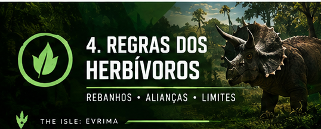
H1–H3
Herbívoros nunca podem aliar-se, ajudar ou agrupar com carnívoros.
Máximo de 3 espécies e 6 dinossauros no total. Cada espécie respeita seu limite; onívoros contam para ambos. Rebanho de uma espécie segue o limite dela.
Stegosaurus e Triceratops só podem agrupar com a própria espécie; não entram em rebanhos mistos, inclusive com Galli ou Beipi.
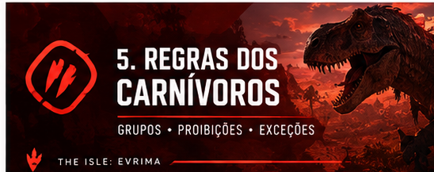
C1–C2
Pode caçar e comer a própria espécie. Traição é proibida e não se pode entrar em luta que já envolva a própria espécie.
Não agrupe, alie ou ajude herbívoros ou outras espécies carnívoras. Exceção: Beipiaosaurus pode entrar conforme O1.
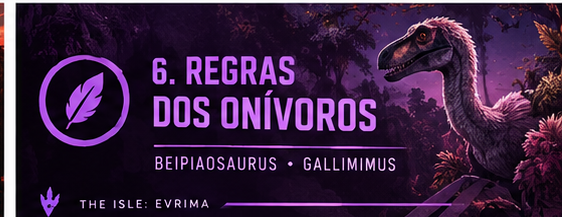
O1–O2
Pode agrupar com qualquer espécie, mas não autoriza misturar carnívoros com herbívoros ou espécies carnívoras diferentes. Stego e Trike seguem H3.
Só pode agrupar com herbívoros e Beipiaosaurus; nunca com carnívoros. Em rebanhos, segue H2.
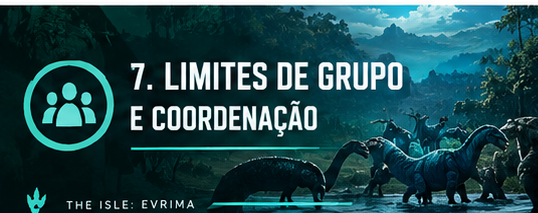
P1–P4
Respeite o limite da espécie em viagem e combate; excesso pode gerar strike. ∞ significa sem limite.
Grupos da mesma espécie que viajam, caçam ou lutam juntos contam como um só.
Ninhos são permitidos dentro do limite. Filhotes contam quando atingem a segunda fase de mutação de crescimento.
Não coordene ataques com outro grupo por chat, voz, Discord ou outro meio. Cada grupo deve agir independentemente.
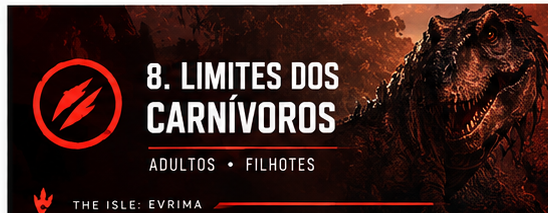
ADULTOS
| Espécie | Limite |
|---|---|
| Deinosuchus | 2 + filhotes |
| Tyrannosaurus | 2 + filhotes |
| Allosaurus | 3 + filhotes |
| Ceratosaurus | 5 + filhotes |
| Carnotaurus | 4 + filhotes |
| Dilophosaurus | 6 + filhotes |
| Herrerasaurus | 6 + filhotes |
| Omniraptor | 10 + filhotes |
| Austroraptor | ∞ |
| Troodon | ∞ |
| Pteranodon | ∞ |
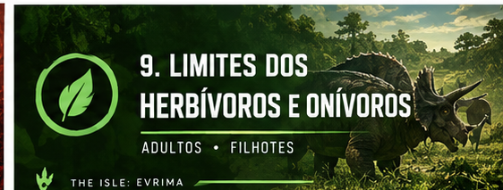
ADULTOS
| Espécie | Limite |
|---|---|
| Triceratops | 2 + filhotes · só própria espécie |
| Stegosaurus | 3 + filhotes · só própria espécie |
| Kentrosaurus | 5 + filhotes |
| Diabloceratops | 6 + filhotes |
| Pachycephalosaurus | 7 + filhotes |
| Maiasaura | 8 + filhotes |
| Tenontosaurus | 8 + filhotes |
| Dryosaurus | ∞ |
| Hypsilophodon | ∞ |
| Gallimimus | 8 + filhotes · herbívoros/Beipi |
| Beipiaosaurus | ∞ · exceção para agrupar |
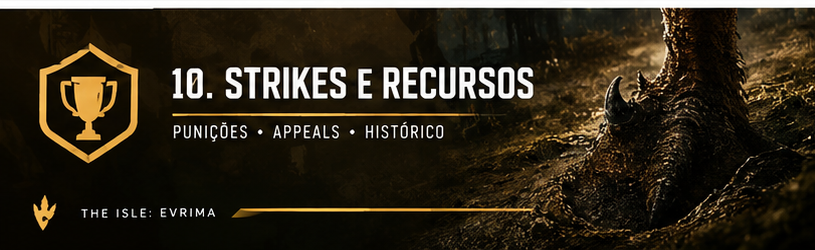
E1–E5
Cada strike expira 30 dias após ser aplicado; um incidente pode gerar vários strikes.
6 ou mais strikes ativos em 30 dias geram banimento permanente automático. Zero tolerância não segue a escala.
A equipe pode banir temporária ou permanentemente mesmo abaixo de 6 strikes, considerando provas, contexto e gravidade.
Abra ticket com replay F2/prints, nomes e IDs visíveis e resumo do que, quando e quem. Banimentos de zero tolerância não podem ser apelados.
Use /myrecord no Discord para consultar strikes ativos.
1: aviso + kick · 2: 1 hora · 3: 24 horas · 4: 7 dias · 5: 30 dias · 6+: permanente automático.
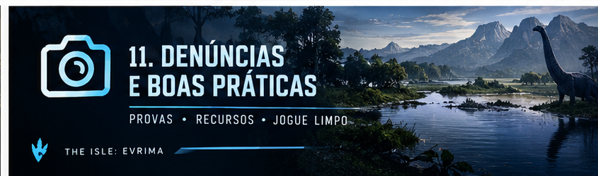
PROVAS • TICKETS
Use replay F2 e/ou capturas de tela, mantendo nomes e IDs visíveis.
No ticket, informe o que ocorreu, quando ocorreu e quem estava envolvido.
Evite insultos e acusações sem provas; a equipe analisa evidências e contexto.
Se não souber se algo é permitido, pergunte à equipe antes de agir.
Observação: este é um resumo em português do material de regras fornecido. Os limites de grupo e critérios para filhotes devem ser confirmados com a versão oficial atual do servidor em caso de divergência.